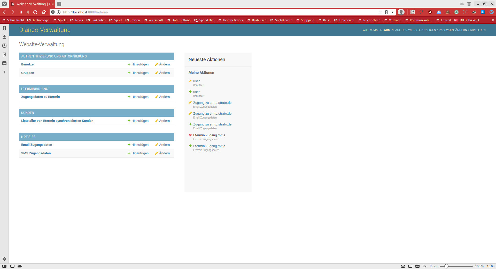

Wir unterstützen Ihre Covid-19 Schnelltests
Sie besitzen eine Covid-19 Teststraße für Antigen-Tests. Wir ermöglichen mindestens 100 Tests am Tag ohne Ihre Mitarbeiter zu überlasten. Lassen Sie sich von uns bei der Einrichtung eines Online-Systems unterstützen.
Ihre Kunden registrieren sich bereits online für einen Termin und kommen direkt zum Eingang Ihrer Teststraße. Mit dem Programm bereiten Sie schnell alle notwendigen Dokumente vor. Nach dem abgenommenen Test tragen Sie das Testergebnis in das System und Ihr Kunde wird automatisch per Mail oder SMS benachrichtigt oder holt sich sein Zertifikat im Verkaufsraum ab.
GitHub-Project: https://github.com/samuelmohr/covidschnelltestsoftware.de-/
Vorteil für Sie
Der Vorteil für Sie liegt in der weitgehenden Entlastung der Mitarbeiter durch die Online Terminvergabe (nur ein kleiner Rest wird im Verkaufsraum durch das Personal, respektive telefonisch in das System eingebucht) und einer Reduzierung von Eingabefehlern. Des Weiteren befreien Sie Ihren Verkaufsraum vom Andrang der zum Test erscheinenden Kunden und erleichtern die Einhaltung der geltenden Hygieneregeln.
Vorteil für Ihre Kunden
Ihre Kunden können sich einfach im Vorfeld online anmelden. Die dadurch stark reduzierten Warteschlangen werden Ihre Kunde durch eine deutlich kürzere Wartezeit zu schätzen wissen. Durch automatische Benachrichtigungen erhalten Ihre Kunden in kürzester Zeit Ihr Testergebnis.
Erfahrungsbericht aus unserer Partnerapotheke am Boznerplatz in Innsbruck
Klara Müller, Inhaberin der Apotheke am Boznerplatz in Innsbruck, berichtet:
Mit dem System testen wir derzeit 150 bis 200 Personen pro Tag unter gleichzeitigem Einsatz von jeweils zwei Mitarbeitern. Durch das neue Online-System konnten wir deutlich unsere Mitarbeiter entlasten. Von Kunden bekommen wir viel positives Feedback.
Wie funktioniert das
Das Programm übernimmt dabei Online – ohne weiteres Zutun – die Terminabfrage und Datenerfassung bei den zu testenden Kunden. Die Kunden bekommen eine Bestätigungsmail und nochmal eine Stunde vor den Termin eine Erinnerungsnachricht per Email (SMS wäre optional auch möglich). Beim Eintreffen des Kunden kann mit einem Klick ein internen Beleg erstellt und gedruckt werden. Anschließend wird der Test durchgeführt. Das Testergebnis kann anschließend über eine einfache Maske unter Angabe des genauen Abnahmezeitpunktes und Resultates erstellt und automatisiert per SMS, E-Mail und/oder Druckauftrag zur Abholung in der Apotheke/Praxis ausgegeben werden.
Was können wir Ihnen bieten
Wir unterstützen Sie bei der Einrichtung eines Online-Buchungssystems bei einem Anbieter mit geeigneter Schnittstelle Ihrer Wahl und bei der Einrichtung des lokalen Systems auf einem Kleincomputer und eines Druckers. Wir unterstützen Sie bei der Konzeption einer Teststraße und gegebenenfalls beim Finden geeigneten Personals. Wir erklären Ihnen den Ablauf, die Verwendung und typische Anwendungsfälle des Programms.
Datenschutz
Alle personenbezogenen Daten befinden sich ausschließlich auf lokalen Datenträgern in Ihrer Apotheke/Praxis und auf Servern der Betreiber der Online-Buchungssysteme. Wir haben und wollen keinen Zugriff auf Ihre Daten. Von uns bereitgestellte Software übermittelt keinerlei Benutzerverhalten an uns oder irgendwelche Werbefirmen.
Kleines Rechenbeispiel für Apotheker
Bei einer derzeitigen Kostenerstattung vom Land in Österreich in Höhe von 25 Euro für Apotheken und einem Materialeinsatz von ca. 5 Euro pro Test, lässt sich unter Annahme von
- zwei extra eingestellten Mitarbeitern zu 21 Euro die Stunde und Kopf inkl. Lohnnebenkosten (gesamt 336 Euro pro Tag) und
- 10 Tests pro Stunde = 80 Tests pro Tag mit einem Deckungsbeitrag von 20 Euro (Erstattung-Material) = 1600 Euro pro Tag generieren.
Für Apotheken in Österreich: Nach Stand 20. Februar 2021 erfolgt die Einbindung der Apotheken in das Anmeldungs- und Meldesystem des Bundes für COVID-19-Tests. Somit ist der Bedarf an unserem System voraussichtlich nicht mehr gegegeben. Für Deutschland bitten wir Sie, die Testrechnung entsprechend Ihren Informationen anzupassen.
Kleines Rechenbeispiel für Ärzte
Bei einer derzeitigen Kostenerstattung vom Land Österreich in Höhe von 35 Euro für niedergelassene Ärzte und einem Materialeinsatz von ca. 5 Euro pro Test, lässt sich unter Annahme von
- zwei extra eingestellten Medizinstudenten zu 21 Euro die Stunde und Kopf inkl Lohnnebenkosten (gesamt 336 Euro pro Tag)
- 10 Tests pro Stunde = 80 Tests pro Tag mit einem Deckungsbeitrag von 30 Euro (Erstattung-Material) = 2400 Euro pro Tag generieren.
Für Deutschland bitten wir Sie, die Testrechnung entsprechend Ihren Informationen anzupassen.
Eindrücke
- Liste der zu erwartenden Personen für den Test:
- Eingabe der Testergebnisse. Den Rest macht das Programm dann von selbst:
- Einstellungen. Hier müssten Sie womöglich nie landen: 